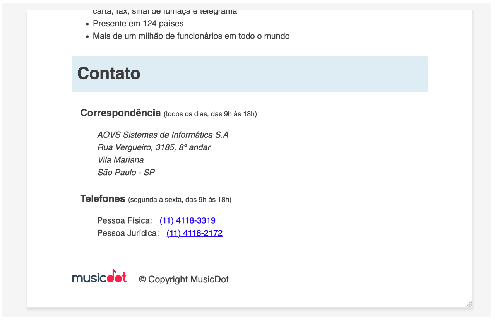
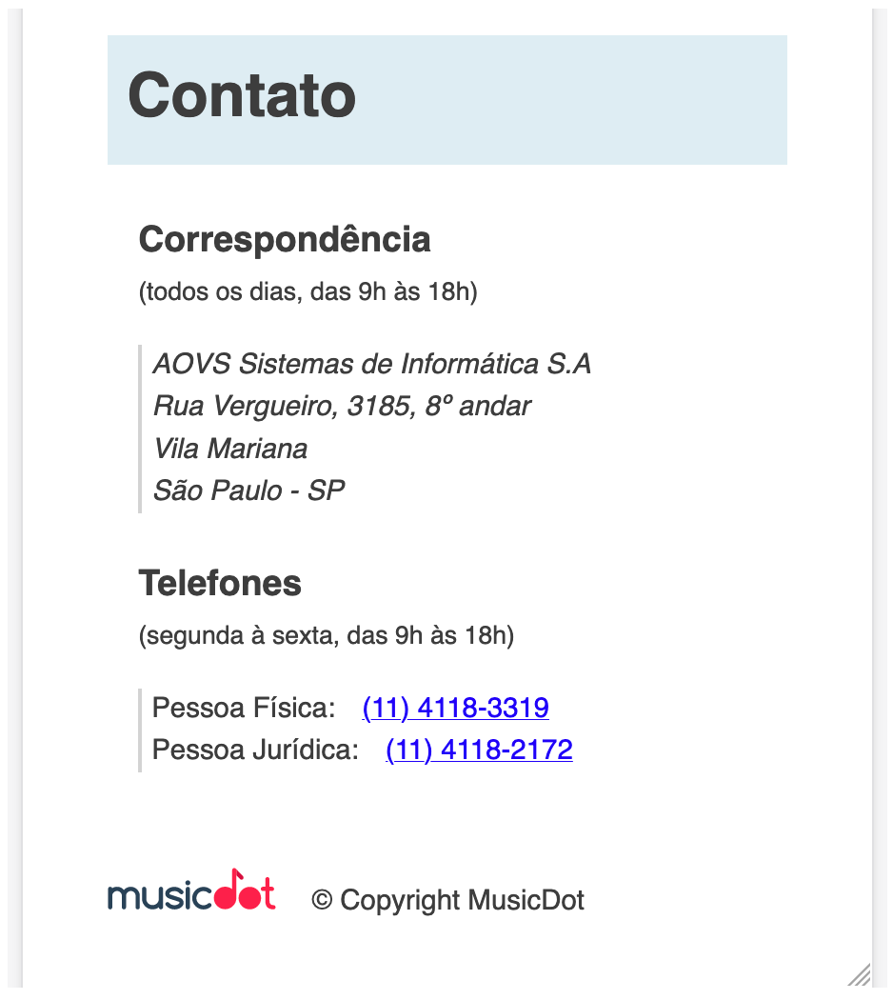
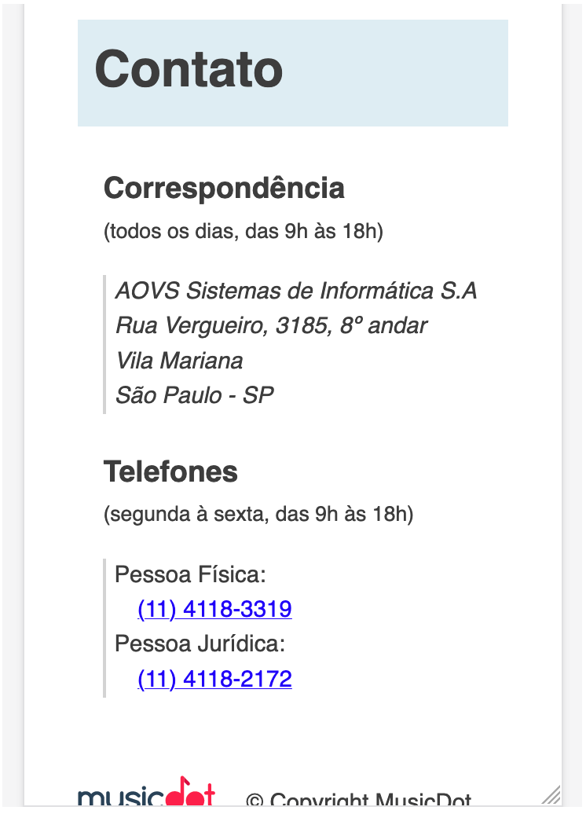

Utilize as media queries para definir estilos diferenciados de acordo com o tamanho da tela.
Para telas de até 850px
As seções "Correspondência" e "Telefones" na parte de "contato" já não cabem mais uma do lado da outra:
transforme as duas seções em blocos para que elas ocupem toda a largura disponível e não dividam o espaço na horizontal entre sí.
adicione também um espaçamento à esquerda do tamanho de um caractér nessas mesmas seções.

Para telas de até 622px
O texto que fica ao redor da imagem da família Tupfeln já não tem mais espaço para mais do que duas palavras:
faça com que a <figure> da família deixe de flutuar para que os textos voltem a ficar apenas embaixo da figura.
centralize a figura na horizontal, em relação à pagina.
Para telas de até 446px
Os subtítulos dentro de "contato" não cabem mais na mesma linha junto com os horários:
Faça com que cada subtítulo desses vire um bloco, que ocupe a linha toda e faça a linha com os horários ir para baixo.
As informação dentro de cada seção de "contato" já não cabem mais na tela:
substitua a margem à esquerda por uma borda de 1px cinza-claro à esquerda.
coloque um espaçamento interno à esquerda de 5px
deixe a fonte levemente menor (0.92em) do que o tamanho da fonta da página
O conteúdo do rodapé já não cabe mais numa linha só:
deixe a fonte levemente menor do que a que a fonte da página (0.92em).

Para telas de até 342px
Os números dos telefones estão no limite e quase já não cabem na mesma linha que sua descrição:
deixe os título da <dl> dos telefones como bloco para que ocupem a linha toda
coloque um espaçamento à esquerda para dar a ideia de hierarquia entre título e número de telefone
